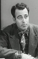

Country:United States, 50 minutes
Spoken languages:English
Genres:Action, Adventure, Drama, Western
Director(s):Robert N. Bradbury
Writer(s):Robert N. Bradbury
Video Codec:Unknown
Number: 189


Certification:NR
Storyline:
Sheriff John Higgins quits and goes into prospecting after he thinks he has killed his best friend in shooting it out with robbers. He encounters his dead buddy's sister and helps her run her ranch. Then she finds out about his past.
Cast: 


Medium: VHS tape,
Comments: Part of: John Wayne Western Collection Volume II
Loaned: No
Aspect ratio: Unknown